Chapter 2 shared that the third key strategic objective for an effective enterprise architecture strategy is to enable and enforce architecture standards.
What first comes to mind, when you think about standards? Chances are, you think about standards that are rules, such as laws and regulations, that must be followed or else there are consequences. Love them or hate them, speed limits are one such example; drivers who speed past traffic cameras get fined indiscriminately.
Look around and you’ll see evidence of standards all around you. That door nearby? It was built to building code specifications. The stop sign or traffic light on the street that you cross every day? It is part of a standardized system designed to instruct drivers and pedestrians.
So far, I’ve talked about standards that tell you what to do. What about how to do it effectively? That is typically what best practices define.
Best practices are proven ways to achieve a standard. Violations of best practices still carry consequences, but potentially not as immediate or severe as violating a legal rule does. For example, paying off credit cards monthly is a best practice to manage finances. If a month’s payment is missed, nothing dire may happen immediately, but after a while, credit card debt can affect the ability to make major financial transactions.
Similarly, look at the example of brushing teeth. It’s a standard rule in my household that you have to brush your teeth twice a day. We’ve also been instructed by our dentist on the best way to brush teeth—brushing with circular motions rather than up and down, taking adequate time to brush rather than rushing, and brushing after meals instead of before. These techniques are best practices that help meet the standard for brushing teeth.
We’re surrounded by standards. But why? What’s the benefit?
The benefits of standards tend to fall into three categories:
This involves optimized processes and efforts to reduce costs and increase productivity—particularly when it comes to making informed decisions that align with your organization’s business needs, and with regard to simplifying complex technology landscapes by reducing duplicative solutions.
Risk management serves to mitigate the chances and/or impact of issues as related to operational risk, security risk, and data management risks.
Chapter 1 discussed how a key benefit of effective enterprise architecture is to break down silos. Enterprise architecture standards are a great way to promote interoperability among systems, thereby allowing for innovative solutions using new technologies that can still work together and be compatible with one another. Such interoperability also allows for being resilient to change.
Formats are a great example of a standard that aims for operational efficiency through reuse and interoperability. Standardization of plugs and voltages allows for a common way to provide electricity to devices. Manufacturers don’t have to worry about creating custom solutions for how devices draw power from the grid, allowing them to focus on innovating more value-added business choices. Standards can have limits, though. For example, the standard voltage and plugs differ across regions, such as between the United States and Europe, and adaptors are necessary to work across them.
Another example that outputs operational efficiency is common terminology. For example, there is a common symbology used to inform pedestrians of when to cross streets. It doesn’t matter if that street is in Washington, D.C., where I live, or in New York, where I grew up; the red hand and the white person outline both mean the same thing. Thus, pedestrians experience reduced cognitive load and a streamlined approach to manage traffic.
Pharmaceutical quality standards are a good example of a standard that aims to mitigate risk. My parents worked in the pharmaceutical industry, where they managed quality for medicines. It was essential that every dose of medicine met the high-quality standards that prescribed every detail including strength, formulation, shape, and size to avoid adverse effects.
Now that we have a common understanding of what standards are and how they are used in general, let’s apply this knowledge to architectural standards and learn why it’s so important to enable and enforce them.
As you may have guessed, an enterprise architecture standard is a standard that defines the requirements for, and applies to, the architecture of a technology solution. These requirements are typically codified in approved corporate governance documents, as illustrated in Figure 5-1.
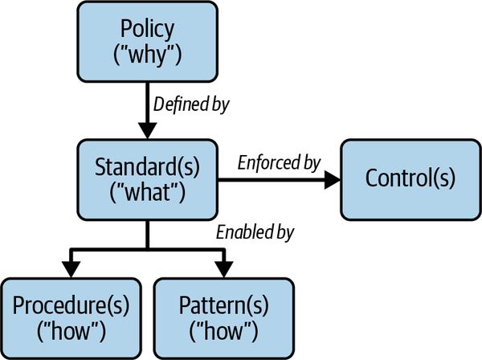
An enterprise architecture policy document defines the why behind needing enterprise architecture standards. It covers the overall business objectives and risks that are mitigated by the standards, and it defines key roles and their accountabilities and responsibilities, such as an enterprise chief architect.
An enterprise architecture procedure document is essentially a standard operating procedure (SOP) that details the process that needs to be executed to adhere to the standard’s requirements. Enterprise architecture patterns, as detailed in Chapter 1, define best practices and elaborate on proven ways to solve problems in adherence to the requirements defined by the standard.
An enterprise architecture standard document defines requirements that support and guide decision making to acquire, create, deploy, and manage technology solutions in alignment to business objectives.
The next several subsections talk about the first major type of architecture standards, which are those that span several architectural concerns known as nonfunctional requirements (NFRs). A nonfunctional requirement defines what must be true for a specific solution quality.
The risk of technology failing is a prevailing concern with regard to business continuity and disaster recovery. Enterprise architecture can help mitigate the risk of experiencing adverse impacts from failures by defining standards that guide decision making to make sure that the technology works as intended and consistently, even in the face of failures. Note that the objective here isn’t to prevent all failures, because that is an impossible feat, and failures will occur. The objective is to respond swiftly and mitigate the impact of any given failure. The following set of NFRs are defined to do just that:
Resiliency is the ability to tolerate failure, where failure is caused by a change to the technology solution or to its surrounding environment. Tolerate means that there may be acceptable degradation or, even more ideally, the failure is detected and resolved before escalating into adverse impacts. A typical resiliency measurement is mean time to repair (MTTR), which is the average time to resolve a failure and return to normal operations. The lower MTTR is, the better your system’s resilience.
Recoverability is the ability to recover capabilities upon a failure. This is necessary to support resilience since this is what allows for tolerating failure. Recoverability is typically measured by recovery time objective (RTO) and recovery point objective (RPO). RTO is the amount of time that a system takes to restore capabilities after experiencing a failure. RPO is the maximum amount of data measured in time that can be lost without unacceptable adverse impacts upon experiencing a failure. For example, a 10-minute RPO means that the system can withstand up to 10 minutes of data loss in the event of a failure. Systems that automate their recovery capabilities are often called self-healing. Self-healing means that they do not require any outside intervention, let alone manual intervention, to recover from a failure.
Availability is the ability to provide expected transactions or capabilities with expected level of service. Availability is typically measured as the ratio of available time to total operational time, and provided as service-level agreements (SLAs) to end users by contract or service-level objectives (SLOs) to end users without a contract. Fault tolerance builds on availability to ensure zero downtime, meaning that RTO and RPO are zero.
Reliability is the ability to provide consistent levels of quality service. A highly resilient application is not by itself reliable; for example, if it fails and recovers within a 10-minute RTO, that’s great resiliency. But if it fails every day for 10 minutes, that’s poor reliability. Reliability is typically measured with SLOs.
Durability is the ability to protect data from loss or corruption.
Observability is the ability to provide transparency and visibility into a system’s behavior in support of troubleshooting and root cause detection. Related capabilities include logging, monitoring, and alerting on the system’s performance. Observability supports mean time to detect (MTTD), which is the average amount of time that it takes to identify the root cause of a failure. To achieve minimal RTOs and swift MTTR, MTTD needs to be as small as possible.
Let’s look at an example illustrated by Figures 5-2 and 5-3 of how applying these NFRs to a simple application changes the architecture of that application.
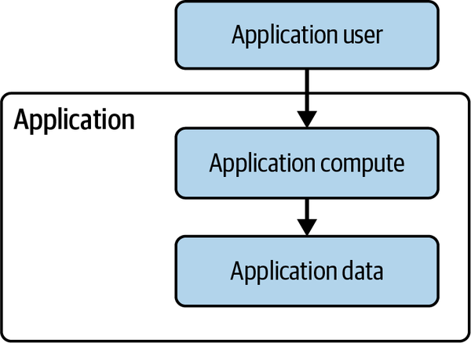
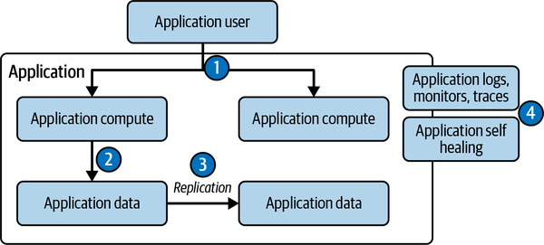
As Figures 5-2 and 5-3 illustrate, designing and building an application with stability NFRs in mind leads to making key application architecture decisions:
With needing to build for redundancy, if user driven, what kind of traffic routing policy makes the most sense—geographically pinned, latency-based, weighted policy? Does load balancing apply based on the selection of compute service? Do scaling groups apply, and if so, with what kind of scaling policy? Is redundancy employed in an active/active, active/passive, or active/standby manner? Does the redundancy support the ability to failover, such that you can reroute traffic to an operational stack (compute plus data) in the event of failure detected in one stack instantiation? How long do you keep this redundant stack around for, to support the ability to failover? Has capacity planning occurred to rightsize the redundant instances from a cost-efficiency perspective? What is the fault domain that determines the level of redundancy? Meaning, if the fault domain is a single availability zone, then you would employ redundancy across multiple zones. If the fault domain is a single region, then you would employ redundancy across multiple regions. In either case, you also introduce affinity concerns with the trade-off of performance and latency for any transaction that crosses zones or especially regions. How does the application deal with these concerns?
Is the interaction from the compute layer to the data layer active/active, active/passive, or active/standby? What kind of consistency is necessary for the data, strong or immediate or eventual? Do consistency requirements differ based on data writes or data reads? Is a data caching layer required to buffer demands?
What kind of replication is needed to meet the consistency and availability requirements? How many replicas are needed; is a quorum needed? How about backups: what are the durability requirements? How often are backups needed, and are they full backups or incremental? Do you need backups or snapshots or both? Do you have to support point-in-time restore?
What kind of monitors, logs, traces, and alerts are needed to support observability? Are thresholds tuned based on testing? Do alerts trigger self-healing automation? What kind of failures can be self-healed?
Although not visualized, another key decision is dependency management:
What is the application dependent on, both inside the application and beyond the application, to provide design-time and runtime capabilities? Design time refers to building and deploying the application. Runtime refers to when the application is operating. Out of these, what are critical dependencies, where critical means that if the dependency goes down, this application will also go down? A failure mode effects analysis (FMEA) is a helpful mechanism to identify and diagnose critical dependencies, thereby allowing for decisions to be made on how to mitigate the risk of a critical dependency failing (see Table 5-1).
| Cause of failure | Probability | Impact | Criticality | Mitigation |
|---|---|---|---|---|
| Root cause | A number on a 1 to 5 scale, where 1 means failure is unlikely to occur, and 5 means failure will definitely occur. | A number on a 1 to 5 scale, where 1 means minimal impact due to failure, and 5 means severe impact due to failure. | Multiply probability by impact. The higher the number, the more critical the failure. | Method to reduce the criticality of failure |
Keeping applications up and stable is a key benefit of defining architecture standards for stability NFRs. The next subsection shifts focus to optimally building, testing, and deploying applications, still with intertwined stability concerns.
A typical business objective is to release new capabilities often. That is often accelerated by the ability to continuously build, test, and deploy software releases:
The ability to be testable, preferably in an automated way, to ensure output of code execution matches intent. There are many kinds of testing. Figure 5-4 shows my take on what kinds of tests to consider for a testability NFR.
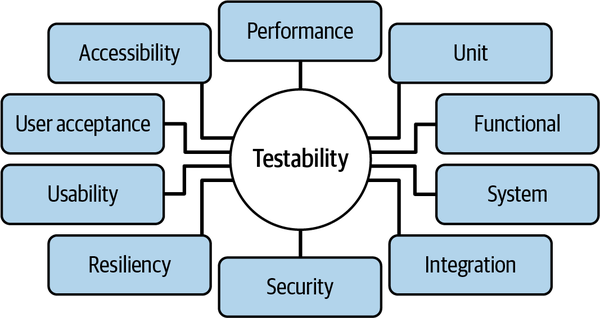
The ability to build and deploy software to output a usable customer product. There are many deployment strategies to consider. Figure 5-5 shows a few examples, where all in one refers to immediately shifting all traffic to a new version, blue/green refers to deploying a blue stack for the original version and a green stack for the new version and only switching to the green stack after testing it, and canary is similar to blue/green in that it has two stacks, but traffic is shifted to the new stack over predefined intervals of time. The example shows three, but this can be as many or as few as you want to get to 100%. The idea is that you test with increased load to find adverse impacts prior to the full load experiencing an issue. The all-in-one deploy window is shortest and only requires the duration of deploying the change. Blue/green is next longest as it requires testing time. Canary can be the same or longer than blue/green depending upon the periodic interval of time chosen to complete the testing.
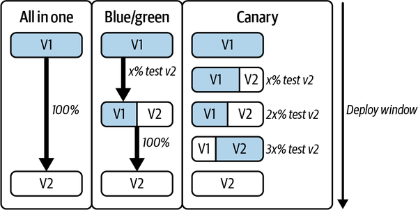
Designing and building an application with release NFRs in mind leads to making key application architecture decisions:
The degree of modularity and composability of the application affects its testability. In addition, you may decide to do behavior-driven development and test-driven development to ensure testability. Resiliency testing might require you to get familiar with chaos engineering and run experiments to tune monitors, logs, and alerts.
Using strategies like blue/green and canary allow you to test before fully committing to the change. They also imply running more than one version of software at a time in production, which means backward-compatible changes. How will you get feedback that your new version is performing adequately? Do you have the right monitors and alerts in place? You’ll also need to decide on whether you do a rollback or a rollforward strategy in the case an issue is detected. In blue/green or canary, you have the original stack available until the traffic is fully switched to the new stack, but do you need to keep it around even longer to have something to roll back to? Or do you rely on roll forward once the deployment is completed?
In relation to agility, the unit of change is your quantum of deployment. Is your change a simple and small change, easy to deploy, troubleshoot, and roll back? Or is your change a larger, more complex, bundled change? Is there a lot of overhead to manage for changes, and how does that factor into your change size?
Keeping applications agile and able to release high-quality code frequently is an output of the release NFRs. The next subsection looks into another aspect of high quality: building highly performant and efficient software applications.
Characteristics of well-architected applications include being able to use resources efficiently—both in terms of performance and cost—even when demands change. The qualities that operational efficiency NFRs aim to output include the following:
The ability to respond to a demand. Typically measured by latency and throughput. The lower the latency and the higher the throughput, the more performant the application is and the better the end-user experience.
The ability to increase in performance and capacity as demands increase. Figure 5-6 shows typical scaling strategies. Scale up or vertical scaling strategy means to increase capacity by adding more resources such as memory or processing power to existing compute instances to handle increased demand. Scale out or horizontal scaling strategy means to add more identical compute instances to increase overall capacity; this strategy relies on the ability to load balance to distribute demand among the instances.
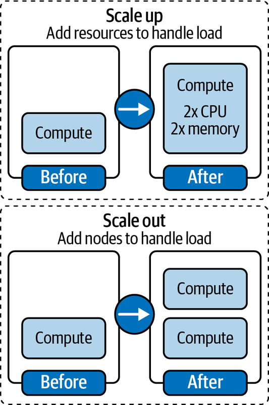
The ability to automatically increase or decrease capacity as demands fluctuate. Can complement the use of automation with a scaling strategy.
The ability to be uncomplicated and easy to understand and maintain.
The ability to optimize total cost of labor to build and operate the solution. Total cost of labor includes not only infrastructure cost but also the cost to operate and maintain the infrastructure and application.
The ability to be implemented within the operating constraints.
The ability to be used by end users easily and delightfully.
Designing and building an application with operational efficiency NFRs in mind leads to making key application architecture decisions:
What are choices that reflect in your memory, disk I/O, storage, and CPU usages and selections? How about container image dependencies, software dependencies, the size of your binaries? Do you use asynchronous or synchronous interactions, and what is your tolerance for latency? What choice of compute and storage meets your performance requirements?
Do you reserve capacity and pre-allocate capacity to handle your peak demand, thereby trading off cost for the assurance of availability? Or do you invest in elasticity and automate scaling, assuming the time it takes to scale is tolerable? Can you scale out horizontally, and if so, what would your minimum and maximum number of scaled units be, and your load-balancing strategy?
From a total cost of ownership and feasibility perspective, is there more benefit to going with a serverless offering or a managed service offering over self-managed? Or how about a vendor software as a service offering?
Are you monitoring spend? Is your spend efficient? Are your workloads sized and utilized effectively? Is your traffic bursty or steady, and are you using cost-effective compute and databases based on those access patterns?
Making applications highly performant, able to respond to changes, and cost-effective is a result of the operational efficiency NFRs. The next subsection looks into another set of NFRs for a key architectural consideration essential to breaking down silos.
An essential architectural ingredient in optimizing systems for local purposes while enabling the integration necessary to compose seamless experiences is interoperability. These NFRs help to mitigate the risk of silos, promote innovation, and use proper levels of abstraction:
The ability to transfer capability from one system to another.
The ability to be future-proofed and withstand changes without major rework.
Designing and building an application with interoperability NFRs in mind leads to making key application architecture decisions:
What are the interfaces such as APIs through which this application will exchange information with other applications? What are the standardized contracts for this exchange? Will the information exchange be real time or batch?
What is the modular structure of the application? How are components defined, and specifically how are their boundaries defined to specify interfaces to exchange data across them?
Making applications interoperable allows for a high degree of loose coupling, which enables agility and adaptability and mitigates dependency risk, as shown in Figure 5-7, since each application can independently change from one another and communicate through well-defined and well-managed interfaces.
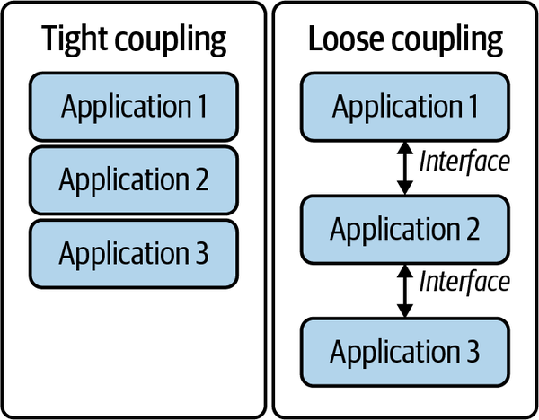
Last but not least, let’s wrap up our discussion of NFRs with a quick look at security.
An essential characteristic of a modern application is its security posture, the ability to protect data. At the highest level, there are at minimum these NFRs:
Protect applications, data, and infrastructure from threats and attacks.
Inspect that what was intended in the architecture is implemented.
Designing and building an application with security NFRs in mind leads to making key application architecture decisions:
What kind of data is being processed and stored, and what is necessary to protect it, such as encryption at rest, encryption in transit, at field level, or overall? Are the right kinds of keys being used? The right certificates? Is data isolated appropriately?
Are there appropriate authentication and authorization mechanisms? How does least-privileged access affect the design of the application? Are both human and system access well controlled? Is every transaction authorized? Is the identity boundary well defined? Is the network boundary well defined? Is network segmentation adhered to appropriately?
Are logs available to support security analysis in the event of a security issue? Is history available and are actions repeatable?
As you can see, architecture standards in terms of NFRs encompass a great number of areas across application design.
We just reviewed a lot of words ending in ity. Check out the ISO 25000 software and data quality standards for more. Each organization’s enterprise architecture enforcement function should define the NFRs that matter the most to their business needs. To define an NFR, consider what must be true for each quality. Using availability as an example, an organization may choose to define an NFR that all of their applications must be available 99.99% of the time.
Since each NFR also acts as a constraint on solution design, it’s important to understand the prioritized trade-offs between them. In the preceding example, if 99.99% is so highly prioritized, then the inherent redundancy required to support that NFR becomes part of cost efficiency.
Architecture patterns are typically used to describe how to implement a design or solution that will meet certain NFRs. Patterns, generally speaking, are best practices. Only if there is truly one way to solve a problem, to answer the question how, should a pattern itself be a rule/requirement. This scenario is somewhat rare.
While NFRs are a large portion of enterprise architecture standards, they are not the only ones. The next subsection talks about another type of enterprise architecture standard, which I call architecture technology standards.
Sometimes called a technology reference model (TRM), architecture technology standards define what is an approved technology service, product, or software for the organization. For example, take software languages. Perhaps one organization is a Java shop, and another is all about Rust. The enterprise architecture strategy function should define principles that help guide decisioning in this space.
Also, I recommend instituting a champion/challenger model to prevent approved standards from getting stale and missing out on using advances in technology. Champion/challenger refers to having an approved standard as the champion but enabling challengers to that approved standard to be raised and evaluated as potential replacements of that standard, based upon whatever criteria was decided upon as the basis for the standard.
So far, we’ve looked at two kinds of architecture standards: NFRs that serve as the requirements and constraints guiding an application’s design, and architecture technology standards that serve to streamline the technology choices made to implement the application. The next subsection looks at the type of standard that answers the question: “What is an application anyway?”
The enterprise architecture strategy function should define the enterprise architecture metamodel, which is intrinsically intertwined with everything that any team does to deliver technology solutions. The reason that the architecture metamodel is so essential is because it does the following:
The metamodel defines terms to provide a common lexicon with which to converse and collaborate. Words like solution, product, service, capability, process, component, application, platform—what do they mean in your organization’s context?
The metamodel defines the foundational underlying structure for your technology landscape—from each type of component and application and asset, to the relationships among them, to the attributes that describe them.
The metamodel must strive to achieve these outputs in an easily understandable way, without oversimplifying so much that business questions cannot be answered. A good metamodel will clearly organize all of the necessary components relating to people, processes, and technology into an efficient end-to-end picture that shows how they are interrelated. Figure 5-8 is a very simple generic example.
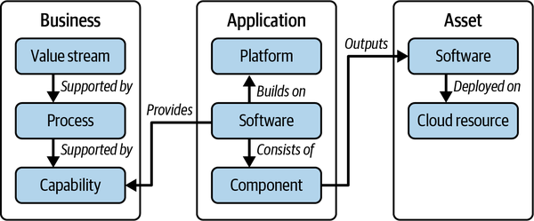
While not shown in Figure 5-8, you can extend the metamodel to define the attributes or metadata for each box. This is key because it anchors governance processes. For example, there are many reasons why you need to know who owns an application, such as understanding who is paying for it, who is building it, who is accountable for its compliance, and who can fix any issues with it. Being clear with the definition of such an attribute—the purpose of how it will be used, the lifecycle of how its value will be managed, the data quality rules with which it will be governed—will be very helpful to streamline operational efficiency of the processes that use this metadata while increasing risk assurance of comprehensive and accurate metadata. In other words, if you are looking for an owner to fix a high-priority compliance issue, it doesn’t help if the value is out of date!
The metamodel must be tailored for your organization to add business value. It is helpful to consider what questions need to be answered. For instance, in my recent experience, I was trying to answer questions such as “What is a platform? What is the tenant boundary within a platform?” This helped me figure out what information I needed to capture in my metamodel.
Now that you know what the different types of enterprise architecture standards are, it’s time to look at when you need them.
Now, before we get too excited about standards and declare a standard for everything, remember that standards also act as constraints. Having so much prescription that human ingenuity is stifled is probably not going to be in an organization’s best interests. Rather, look for the high-leverage opportunities to standardize, where the benefits of reuse, operational efficiency, and risk reduction outweigh the need for developers and engineers to make their own choices. See Figure 5-9 for a visualization of this trade-off.
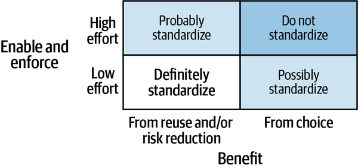
The difference between probably and possibly in this chart is that probably means that standardization is likely worth it in terms of benefit outweighing investment to standardize, and possibly means that there may be low-hanging fruit to standardize but the return on investment may not be compelling.
Architecture standards still need to promote creative freedom and innovation.
Recall that standards typically mitigate a risk of some kind. Yet, when risk is not perceived as a threat, standards are likely to be flouted. For example, consider a rolling stop at a stop sign. If the risk of noncompliance is not perceived as a true threat, it is easy to overlook the standard, and the standard is rendered ineffective.
But should we only ever operate under the weight of a threat? Do what you’re supposed to do or bad things happen? While fear can be a powerful motivator, I find it to be an utterly exhausting one.
If architecture standards are only viewed as a have to do it as a compliance activity—a check-in-the-box bottleneck to move past to get real work done—then architecture as a function has failed. It’s too easy to dismiss architecture as a bureaucratic nightmare in this perception.
If it’s too hard to adhere to a standard, then people are less motivated to follow the standard, let alone to follow it well.
And that brings me to my main point of the third objective of our enterprise architecture strategy: you need to both enable and enforce architecture standards to realize their benefits.
To enable means to make it easy for developers and engineers to follow the standard, with training, processes, and tools.
Training material can be delivered in a variety of ways:
Self-service, self-paced training using a computer, whose completion is measured and recorded.
Instructor-led training.
An informal method, where the material is offered directly in the process that the user is following just in time. See Chapter 4 for more.
In addition, another mechanism that serves to promote training and knowledge sharing is centers of excellence or communities of practice. A center of excellence (CoE) is a formal group with an established charter, mission, and set of stakeholders—typically funded. The CoE is seen as a beacon of knowledge for a particular subject matter area, and it provides both deliverables and support for other teams to gain knowledge. A community of practice (CoP) is a more informal structure. CoPs bring together groups of people interested in the same topic, typically unfunded and held on a voluntary basis. A CoP can also grow knowledge by sharing lessons learned and creating informational materials but does not typically have the consulting arm that a CoE has to support outreach to other teams. Table 5-2 highlights the key differentiators between a CoE and a CoP.
| CoE | CoP | |
|---|---|---|
| Organization | Formal, funded | Self-organized, voluntary |
| Outputs | Defined deliverables, supports the deployment of technology in the subject matter area with migration and consulting support | Self-defined, supports improvements in the use of the technology in the subject matter area |
The enterprise architecture organization may sponsor one or more CoEs and CoPs based on the technology subject matter areas that are new to help bridge skill gaps in an organization’s talent.
Processes and tools are also key for enablement. Chapter 4, for instance, covered making architecture information embedded and accessible, which is a form of enablement. Chapter 2 covered general principles to use and apply in making enablement possible. To further help to decide how to use training, processes, and tools in enablement, the next subsection discusses recommended principles.
The following principles can be used to guide decisions around making enablement possible:
Be as specific and explicit as possible in the intent or purpose of enablement and about who needs to be enabled. For example, if your architecture technology standard includes containers, it’s helpful to be specific on standards for building containers such as hardening and logging configuration that can be enabled.
Automating enablement processes and tools helps to scale to all of the developers and engineers who need to adhere to the standard. For example, an automated container build process could readily take care of the hardening and logging configuration specified in the previous principle.
Focus enablement efforts as early in the software development lifecycle as possible to avoid rework later. For example, the container build process from the previous principle could result in golden images that are used as the basis of all container development, thereby shifting the specific standard as far left as possible.
These principles are applied in the enablement framework, elaborated in the next section.
The enablement framework can be used to assess your current state and identify opportunities to make adhering to the standard so simple and so easy that it is effortless. The framework is illustrated in Figure 5-10.
The first step of the enablement framework is specify. In this stage, you identify all of the activities that are necessary to perform to adhere to the standard. For each activity, you also determine when they need to be done and whether any of them repeat. You also enumerate the options that may exist to complete them.
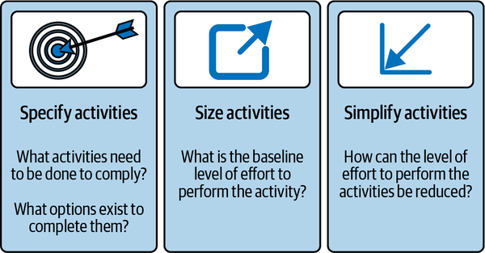
The next step is the size of each of the required activities. In the size stage, you will estimate how long and how much effort it takes to complete the activity. These estimates should be grounded in data gleaned from performing these activities. This is also a good way to figure out what the bottlenecks are—what specific actions in each activity take the longest and/or the most amount of effort.
The final step is to simplify and determine the best way to make these activities frictionless and efficient. How do you alleviate the bottlenecks? The solution’s approach may require several aspects, from better process to better tooling and automation, and it involves analyzing trade-offs. The trade-off of making enablement frictionless is that doing so requires investment in establishing and maintaining the enablement processes and tools.
As a real-life example, let’s look at my coffee routine. Coffee, for me, is a necessity to go about my day. To make coffee, I need to have coffee beans available, a functional grinder, clean water, and an operational coffee maker. Further, I can either make it myself, wait for my husband to make it since he’s up before me, or use a timer and load the coffee maker the night before. This example illustrates the degrees of enablement:
The onus is on the developer or engineer to make decisions, problem-solve, and figure out how to adhere to the standard.
Some information and/or tooling is provided, most often in a self-service way, for the developer or engineer to reuse a solution that will adhere to the standard.
The cognitive load on the developer or engineer is fully reduced such that they don’t need to expend any effort to figure out how to adhere to the standard; a guided experience or automated process/tool does it for them.
Let’s go back to the high availability NFR mentioned earlier. What can be done to enable teams to achieve high availability?
One activity would be around designing a high availability architecture. The application architect should do this activity, and it should be a one-time activity unless there are significant changes to the application architecture.
If the application architect has to design the architecture from scratch, this may take a significant amount of time to work through details such as load balancing, scaling strategies, and traffic routing, not to mention all the data layer concerns around trade-offs among availability, consistency, and performance.
The application architect’s job could be eased if design patterns around high availability architectures are easily available. This could be further streamlined if in addition to being available as a documented blueprint or reference architecture, it was also available as a running reference implementation and/or an infrastructure as code template for a starter application.
To enforce means to ensure that the standard has been effectively adopted or adhered to. Mechanisms include preventive controls and detective controls, as shown in Figure 5-11. These control points are often delivered via policy enforcement points integrated into processes and/or tools. Preventive means that the enforcement point is constructed in such a way that a noncompliant result can never occur. For example, a standard continuous delivery (CD) pipeline could act as a preventive control by preventing deployment of software that doesn’t pass required checks. Detective means that there is a risk of noncompliance, but if it does occur, it can be detected and then remediated. Reporting is a common mechanism for detective controls.
To construct specific enforcement points, the next subsection describes principles that will help. These are different from and additional to the high-level principles described in Chapter 2 around determining your approach to enforcement.
The following principles can be used to guide decisions around making enforcement possible:
Centralize enforcement as much as possible rather than redoing the compliance choice at the local team level. For example, centralizing checks into standard CI/CD pipelines rather than every team redoing a check in their own pipeline.
Automating enforcement processes and tools is the best way to reduce level of effort and improve assurance. For example, automating a check for hardening configuration in a standard CI build process rather than expecting teams to review hardening as part of code reviews.
Focusing enforcement efforts as early in the software development lifecycle as possible to avoid noncompliance results in significant savings. For example, automating network security checks like using private endpoints to run against infrastructure as code rather than waiting to inspect after deploying resources whenever possible.
These principles are applied in the enforcement framework discussed in the next section.
The north star of enforcement is to prevent the wrong result, rather than only detecting and reacting to it with corrective action. For example, preventing the association of a public IP address to a cloud compute instance through automated checks of infrastructure as code is better to prevent risk than monitoring and notifying for corrective action after that public IP address is already associated.
To achieve this north star, the first step is to figure out where all the policy enforcement points are in which enablement activities occur and their outcome can be measured for compliance. The second step is to deduplicate enforcement points to determine which ones to use and how often enforcement should take place. The last step is to educate, because empowering developers and engineers with knowledge of compliance allows them to succeed. Figure 5-12 illustrates this enforcement framework.
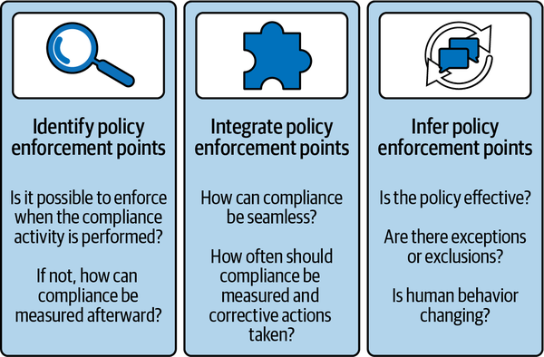
The first step of this enforcement framework is identify, which means to review the compliance activities output from the enablement framework and determine if compliance can be embedded directly into that activity. For example, let’s say you had a security requirement to keep your network traffic private. When deploying cloud-hosted resources, there are configuration settings that support private networking. The compliance activity associated with this requirement is to apply that configuration setting. The preventive control for this activity would be to ensure only the right configuration is possible by controlling the infrastructure as code used. The detective control for this activity would be to monitor the configuration setting after the resource is deployed and to prompt corrective action if the setting was incorrect.
The next step of the enforcement framework is integrate, which means to incorporate the compliance controls as seamlessly as possible into the developer’s workflow. In the same example of private networking, let’s say you decide to go with preventive control. In that scenario, there are several options to make that work, including the following:
You could provide a template with the right configuration setting and expect the developer to use that as a starting point and, further, not override that setting.
You could provide a custom resource definition that the developer is required to import and cannot override for this particular configuration setting.
You could provide a separate compliance test process that they can run their infrastructure as code files through.
There are probably other options available, too, but just looking at these three, what is the least disruptive option to the developer’s workflow? What is the most natural action for them to take? What makes it easy for them to adopt? Out of these three options, I’d recommend option 2.
The last step is to infer, meaning to monitor the enforcement mechanism or control and understand if any refinement needs to occur to make it more effective.
Here’s a real-life example with a stop sign. I’ve observed that on certain streets in my neighborhood, where there are stop signs on every block, drivers tend to do the rolling stop. However, if that intersection is coupled with a school sign, and it is during school hours, drivers tend to make a full stop. Or, if there is a pedestrian or cyclist at the intersection, drivers tend to stop and make way for them. Moreover, if there is also a crossing guard or cop at a school intersection, drivers not only make a full stop, they also pay attention and wait to cross the intersection when directed. This example illustrates the degrees of enforcement:
No mechanism of enforcement, just knowledge of the rule. Some people will follow the standard, some will not.
A mechanism that prefers enforcement. More people will follow the standard.
A mechanism that requires enforcement. All will follow the standard.
Refer to Chapter 2 for related discussion of consistent severity schema to apply to taking corrective actions.
Use data from monitoring the control in the infer stage to understand whether you have the optimal degree of enforcement or if you need to make changes.
Now that you know more about architecture standards and frameworks to enable and enforce them, let’s review some case studies and study the lessons learned.
Let’s review a few case studies and examine some thematic dos and don’ts that they reveal.
The first scenario is the free-for-all.
EA Example Company wanted to attract top software engineering talent. To do so, one of the things their recruiters touted was technical growth in software languages. Over time, the organization ended up with hundreds of applications built with dozens of different languages such as Java, Ruby, Python, Go, Rust, JavaScript, Scala, Elm, R, and C#.
Initially, software engineers appreciated the variety and the flexibility to work with a language of their choosing. Over time, though, they started to hit roadblocks. Sometimes they spent time developing only to find that they couldn’t release what they had developed to production because cybersecurity couldn’t actually scan their software, and scanning was a non-negotiable requirement. Cybersecurity had a terribly difficult time keeping up with the different languages to ensure they were scannable and that vulnerabilities could be found and managed.
Sometimes they found that they could not easily get the software libraries that they needed in their software language. Multiple methods of building and deploying software artifacts and binaries for each language had to be supported and maintained, and the central tooling teams could not keep up with the variety of demand.
Sometimes, some software engineers wanted to change teams to grow with new opportunities. However, they faced an uphill knowledge curve when trying to take advantage of organizational mobility due to having to learn whole new languages to support the software. The organization’s business leadership was displeased to learn that features were delayed because software engineers had to first spend time learning the software languages of that particular product.
What happened here?
EA Example Company had good intent, but without standards on software languages, they created an environment of chaos as first mentioned by Chapter 1. EA Example Company did not consider the operational and cybersecurity maintenance needs, nor the fungibility inhibitors, of supporting disparate software languages.
In summary, do:
Carefully consider the cost versus benefit of a given developer or engineering choice in the context of the business need or outcome.
Don’t:
Go to the extreme of chaos without any guidance whatsoever.
The next scenario is called the suffocation.
EA Example Company wanted to focus software engineering on business logic only. As a result, they decided to get rid of the need to expend engineering labor on other parts of the software application. To do that, they prescribed and dictated every detail of the technology stack that the engineers worked with, from infrastructure to the application itself, encompassing both requirements and best practices. Now the engineers didn’t have to make so many choices and could presumably focus on business logic.
Indeed, this strategy helped with fungibility of talent and streamlining of cybersecurity and operational processes and tooling to support this technology stack. However, over time, the technology stack became outdated. Engineers pointed out that new technology was emerging that could not be used. Talent attrition started to occur, in part because software engineers felt that the technology was antiquated and that there was no path to evolve, so they could learn more elsewhere.
In addition, the prescribed technology stack did not foresee every possible use case, every possible permutation of business need. Thus, it did not work cleanly for every use case. Engineers with more complex use cases that didn’t fit cleanly still expended a significant amount of effort either trying to conform without avail or trying to explain their noncompliance to the enforcement processes. Both of these paths were unduly frustrating, and engineers began to leave to seek greener pastures elsewhere, with less bureaucracy.
What happened here?
EA Example Company mistakenly viewed standardization as a one-time activity and resisted updating the standard because the standard was working to streamline operations, and migrating to new standards was hard. Thus, while they did benefit in the near term from their standardization, in the long term, their method of standardization proved to be brittle.
Moreover, by attempting to overprescribe every detail, they did not allow for any flexibility or innovation. This was a mistake because it is impossible to foresee everything, and by dictating best practices in addition to requirements, they essentially closed the door to discovering more best practices and enabling more use cases. Innovation itself was slowly suffocated over time.
The takeaway here is that you do:
Declare standards where appropriate.
Don’t:
Forget to include an approach to evolving standards as part of declaring standards. For example, the champion/challenger model where a challenger is incubated and evaluated to take over a champion.
Overprescribe, especially when it comes to best practices.
The last scenario is called the reporter.
EA Example Company mandated certain standards. In trying to figure out how to ensure that those standards were met, they found that the easiest compliance mechanism was a reporting solution. At first, this reporting solution was highly manual and prone to human error. So they invested in measuring compliance against those standards with a robust automated reporting solution. This reporting solution could detect noncompliance and trigger a corrective action process to remediate the noncompliance at scale. This remediation process did serve to correct the noncompliance issues, but was still costly and disruptive to teams trying to develop new features. Over time, EA Example Company noticed a sustained pattern of detection and remediation, sometimes multiple times within the same team and same product.
What happened here?
EA Example Company emphasized detective enforcement, without any consideration given to preventive enforcement. Although they did try to improve the solution through automation, and the automation allowed measurement to scale, the reliance on detective enforcement caused issues to be caught very late in the development cycle, which caused more rework to fix. Additionally, teams did not learn how to prevent issues; instead, their learned behavior was to get caught and fix after the fact. They were essentially not enabled to be successful.
To summarize, do:
Automate enforcement.
Provide a feedback loop via enforcement that educates developers and engineers on how to comply in the first place.
Don’t:
Overlook preventive enforcement.
Overlook the value of enablement.
To achieve the enable and enforce objective and tailor key results for your own organization, consider balancing risk mitigation and operational efficiency benefits with the creative freedom needed to inspire innovation. Declare standards where there is the most to gain and the constraints are acceptable friction for teams to adhere against. Typical enterprise architecture standards include NFRs spanning areas such as stability, release, operational efficiency, interoperability, security, technology standards, and the metamodel.
For every standard, be sure to enable and enforce that standard. Use the enablement-and-enforcement frameworks to figure out your specific enablement-and-enforcement mechanisms.
With the enablement framework, you can:
Specify the activities that engineering teams need to perform to comply with a standard.
Size these activities in terms of level of effort.
Simplify these activities to reduce that level of effort and make it easy to comply.
With the enforcement framework, you can:
Identify the possible policy enforcement points for controls to ensure that the compliance activities output by the enablement framework do in fact comply with the standard.
Integrate the policy enforcement points as seamlessly as possible into the software delivery processes and tools.
Infer the behavior of humans and efficacy of the policy enforcement points over time to see if any improvements are needed.
Use these frameworks to diagnose weaknesses that you can strengthen through your enterprise architecture strategy objectives and key results centered on standards.